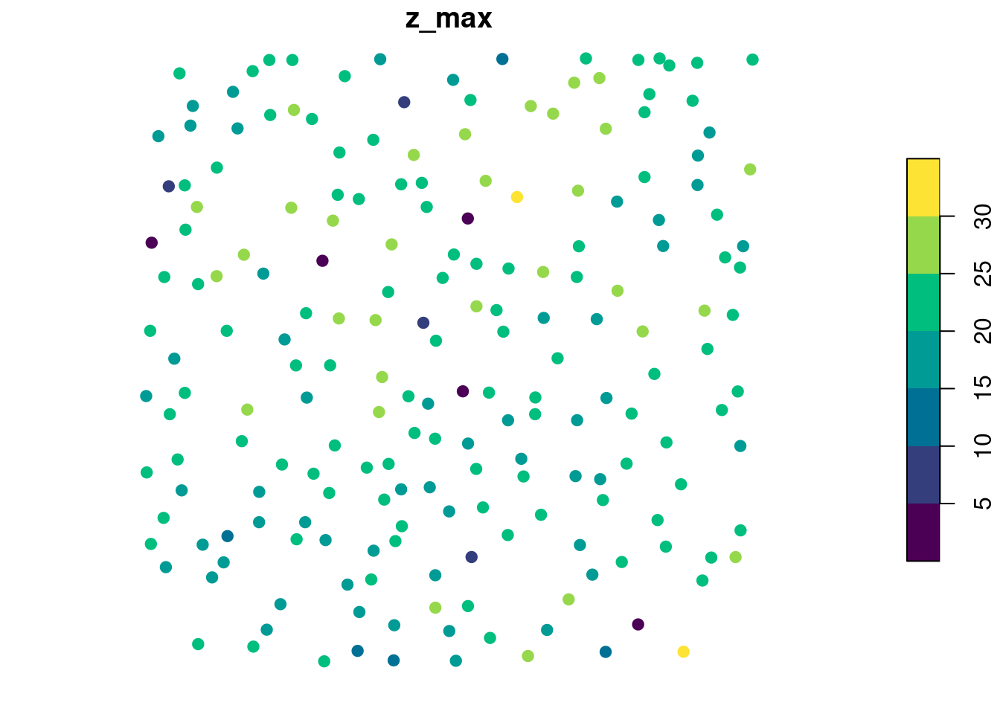
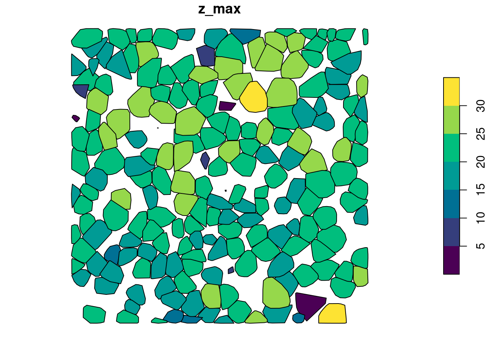
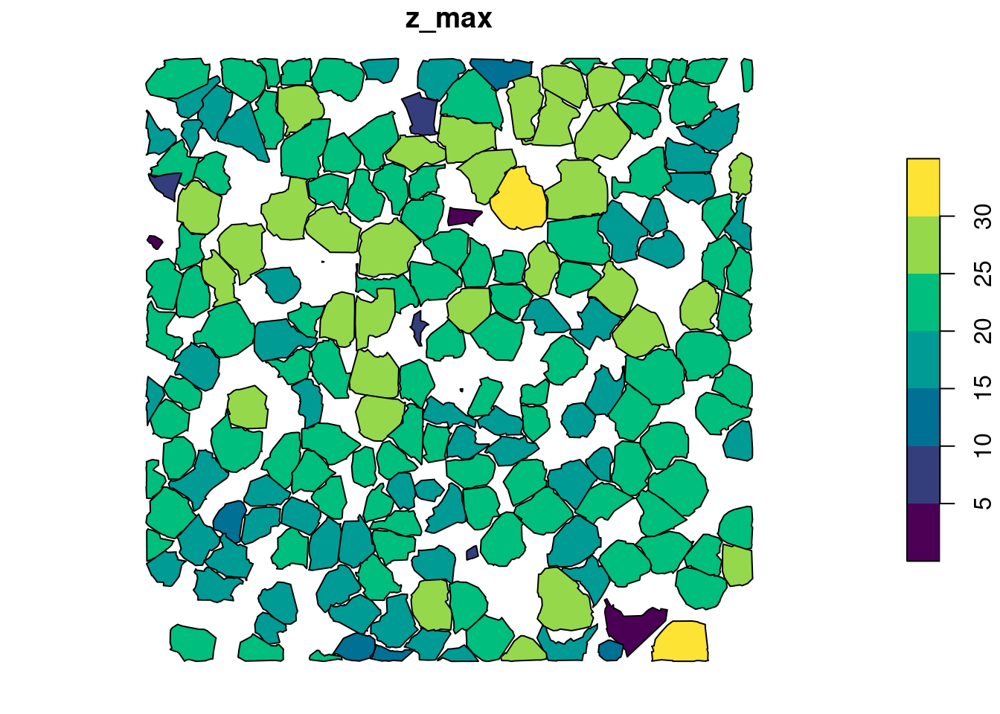
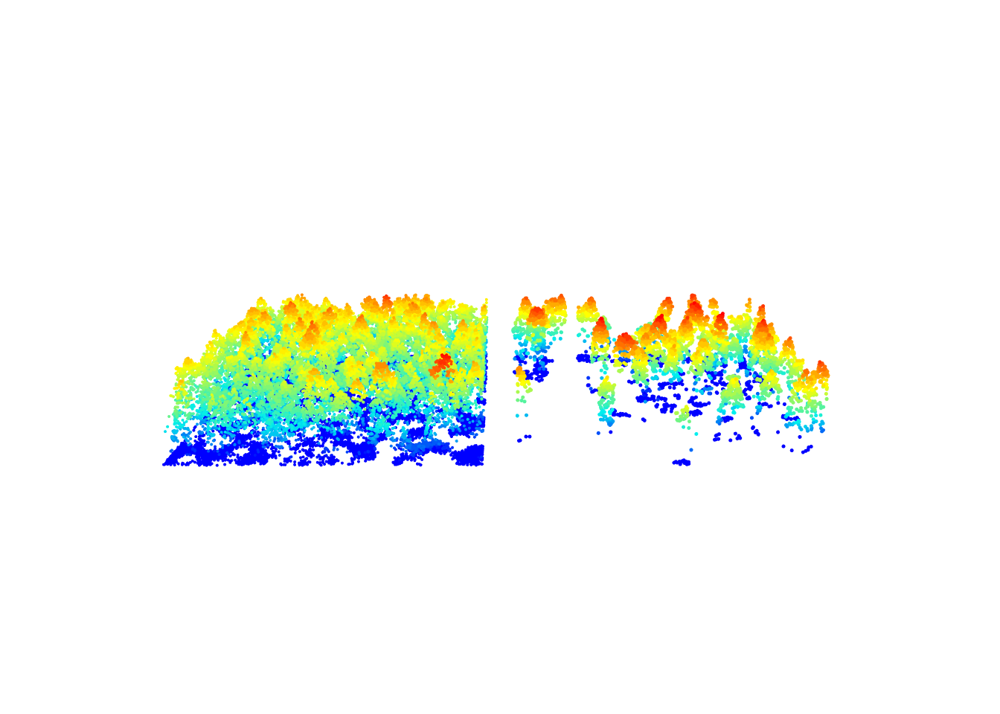
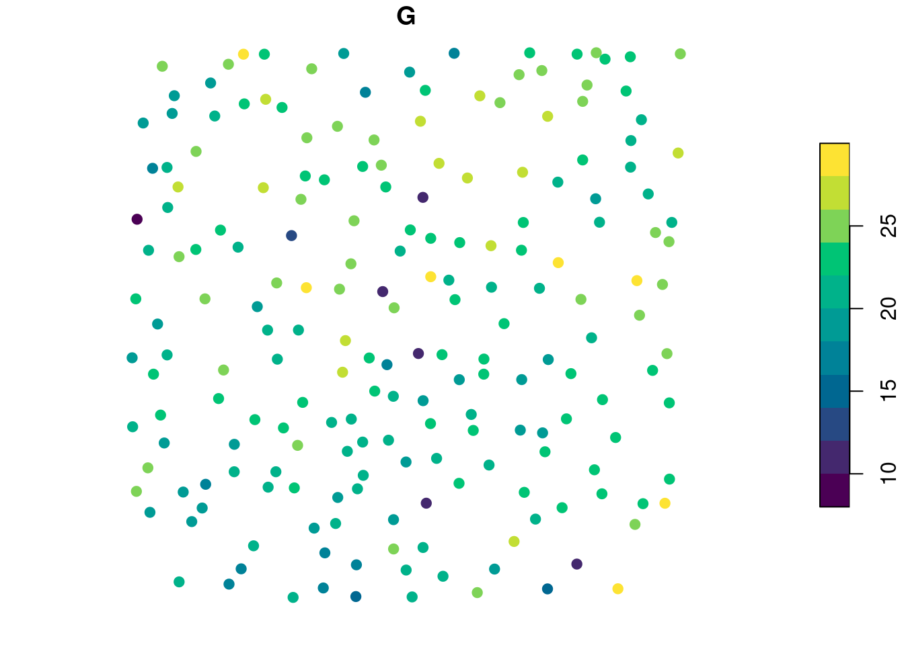
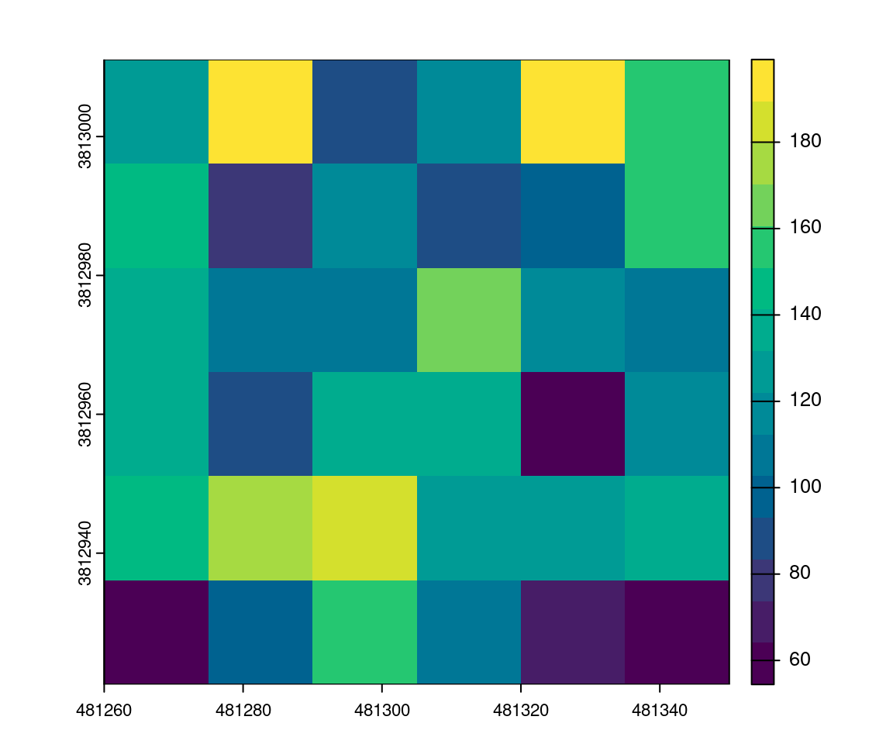

LASfile <- system.file("extdata", "MixedConifer.laz", package="lidR")
las <- readLAS(LASfile, filter = "-drop_z_below 0") # read the file
metrics <- crown_metrics(las, ~list(z_max = max(Z), z_mean = mean(Z))) # calculate tree metrics
head(metrics)
#> Simple feature collection with 6 features and 3 fields
#> Geometry type: POINT
#> Dimension: XYZ
#> Bounding box: xmin: 481263.4 ymin: 3812992 xmax: 481294.7 ymax: 3813011
#> z_range: zmin: 9.18 zmax: 26.95
#> Projected CRS: NAD83 / UTM zone 12N
#> treeID z_max z_mean geometry
#> 1 1 16.00 7.232609 POINT Z (481294.7 3813011 16)
#> 2 2 26.95 19.401542 POINT Z (481281.9 3813003 2...
#> 3 3 23.58 18.242222 POINT Z (481278.4 3813002 2...
#> 4 4 15.83 8.820677 POINT Z (481272.9 3813006 1...
#> 5 5 20.91 10.642114 POINT Z (481265.7 3812992 2...
#> 6 6 9.18 2.578750 POINT Z (481263.4 3812992 9...12 Derived metrics at the tree level
12.1 Overview
The “tree” level of regularization corresponds to the computation of derived metrics centered on each tree using the points that belong to each tree. Derived metrics calculated at tree level are the basis for an inventory at the individual tree level or the basis for individual species identification.
Similarly to what we have seen in Chapter 9, Chapter 10, and Chapter 11 calculating derived metrics is straightforward and works exactly the same way as in cloud_metrics() or pixel_metrics(). Derived tree metrics are calculated using the crown_metrics() function. The input data for this function is a point cloud that needs to contain information from tree segmentation (e.g. usually the treeID attribute). In the majority of cases crown_metrics() is run after segmenting tree crowns with segment_trees() (Chapter 8) but the segmentation could also be performed in another way independently of lidR.
In the example below we show the basic use of the crown_metrics() function on the files we used in Chapter 8. This file already stores an ID for each point referring to each tree, so we don’t need to perform the segmentation first. We compute two metrics z_max and z_mean using the formula list(z_max = max(Z), z_mean = mean(Z). The output is a sf/sfc_POINT.
The XYZ coordinates of the points correspond to the XYZ coordinates of the highest point within each tree and each point is associated to 3 attributes treeID + the two user-defined metrics. In the plot below the output is visualized using color to depict the z_max metrics.
plot(metrics["z_max"], pal = hcl.colors, pch = 19) # plot using z_max
Like other functions seen in Chapter 10 and Chapter 11, users can create their own custom functions containing all of the metrics of interest. In the example below we show how to calculate metrics that are based both on point heights and intensities.
custom_crown_metrics <- function(z, i) { # user-defined function
metrics <- list(
z_max = max(z), # max height
z_sd = sd(z), # vertical variability of points
i_mean = mean(i), # mean intensity
i_max = max(i) # max intensity
)
return(metrics) # output
}
ccm = ~custom_crown_metrics(z = Z, i = Intensity)crown_metrics() can also return sf/sfc_POLYGON by changing the geom argument
metrics <- crown_metrics(las, func = ccm, geom = "convex")
plot(metrics["z_max"], pal = hcl.colors)
metrics <- crown_metrics(las, func = ccm, geom = "concave")
plot(metrics["z_max"], pal = hcl.colors)
12.2 Applications
Selection of trees
crown_metrics() gives the ID of trees and associated metrics. We can use these data to filter the scene and remove trees with a low intensity.
metrics <- crown_metrics(las, ~list(imean = mean(Intensity))) # calculate tree intensity metrics
metrics <- metrics[metrics$imean > 80,] # filter intensity
subset <- filter_poi(las, treeID %in% metrics$treeID)
x <- plot(las, bg = "white", size = 4)
plot(subset, add = x + c(-100, 0), size = 5) # some plotting
Tree based inventory
Assuming we know a relationship between the derived metrics and a value of interest G - such as the biomass of a tree - we can map the resource. Lets assume that \(G = 0.7 \times z_{max} + 0.1 \times i_{mean}\). In real life a value of interest is more likely to be related to the crown size, but this is a simplified example. First we can compute G for each tree:
metrics <- crown_metrics(las, func = ~custom_crown_metrics(Z, Intensity)) # calculate intensity metrics
metrics$G <- 0.7 * metrics$z_max + 0.1 * metrics$i_mean # set value of interest
plot(metrics["G"], pal = hcl.colors, pch = 19) # some plotting
Then using a raster package, we can rasterize the map. Here we get the sum of G from each tree within each 15 m pixel to get the total value of G for a given pixel. The final output is a predictive model that mixes the area-based approach and the tree-based-approach.
r <- terra::rast(ext(las), resolution = 15)
v <- terra::vect(metrics["G"])
map <- terra::rasterize(v, r, field = "G", fun = sum) # extract sum of G at 15m
plot(map, col = hcl.colors(15)) # some plotting
This is a small example that may not be of interest, but one may imagine or test the result on a bigger data set.